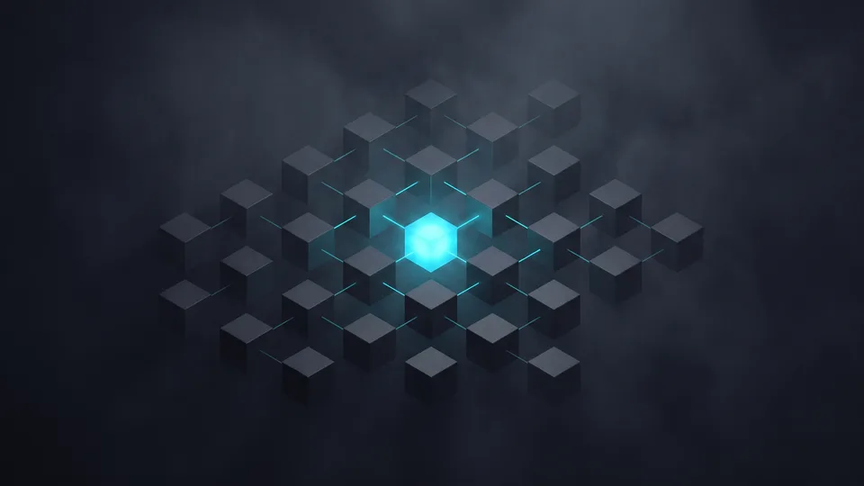

Arayüz Tasarımının Temel İlkeleri Nelerdir?
Arayüz tasarımı; görsel hiyerarşi, tutarlılık, geri bildirim, yakınlık ve erişilebilirlik olmak üzere beş temel ilkeye dayanır. Bu ilkeler, ekrandaki her öğenin boyutunu, rengini ve konumunu belirleyen kural setidir. Estetik tercih gibi görünen kararların arkasında ölçülebilir bir gerekçe bulunur. İlkeleri bilen ekip, tartışmayı zevkten çıkarır.
İlkeler birbirinden bağımsız değildir. Hiyerarşi zayıfsa tutarlılık da işe yaramaz; kullanıcı neye bakacağını bilemez. UI UX tasarım hizmeti verirken her ilke ayrı bir satırda puan alır. Böylece revizyon turları kişisel beğeniye değil, tanımlı ölçütlere göre ilerler.
Görsel Hiyerarşi Nedir?
Ekranda en büyük ve en koyu öğe, kullanıcının ilk durağıdır. Görsel hiyerarşi de öğeleri önem sırasına göre büyüklük, renk ve boşlukla ayıran düzenleme ilkesidir. Öncelik sırası netse kullanıcı ilk saniyede ana eylemi bulur. Başlık, alt metin ve buton arasındaki fark yeterince keskin olmalıdır.Tutarlılık Nedir?
Aynı butonu iki farklı biçimde gören kullanıcı, ikisine de tam güvenmez. Tutarlılık, aynı işlevin her ekranda aynı görsel dille sunulmasını sağlayan ilkedir. Birörneklik, öğrenme yükünü düşürür; kullanıcı bir kez öğrendiği kalıbı her sayfada tanır.Yakınlık İlkesi Ne İşe Yarar?
Birbirine yakın duran öğeler, kullanıcının zihninde tek bir grup oluşturur. Yakınlık ilkesi de ilişkili alanları boşlukla kümeleyip ilişkisiz olanları ayırır. Form etiketi kendi alanına, yardım metni kendi satırına yapışır. Boşluk dağıldığında ise etiketin hangi kutuya ait olduğu belirsizleşir ve hata oranı artar. Bu yüzden boşluk basamaklarını çizgi ya da çerçeveden önce ayarlıyoruz.Görsel Hiyerarşi Kullanıcının Gözünü Nasıl Yönlendirir?
Göz, ekranda en büyük ve en kontrastlı öğeye önce gider; hiyerarşi bu refleksi tasarımcının kontrolüne verir. Ekranda her şey aynı ağırlıktaysa hiçbir şey öne çıkmaz. Tasarımcı, birincil eylemi tek bir öğeye emanet eder; ikincil bağlantıların tonunu düşürür. Bu ayrım, kararın görsel karşılığıdır.
Hiyerarşiyi kurarken üç ayara bakıyoruz: tipografi ölçeği, kontrast oranı ve beyaz alan. Tipografide yaygın ölçek geleneğini izleyip 1,25 ile 1,5 arasında bir katsayı seçiyoruz; bu aralıkta başlık düzeyleri birbirine karışmaz. Kontrastta kendi alt sınırımız nettir: küçük metinde 4,5:1, 18 punto üzeri metinde 3:1. Beyaz alan ise gruplama işini sessizce yapar.
Odak Noktası Nasıl Belirlenir?
UI UX tasarım hizmetinde her ekran için tek bir birincil eylem tanımlarız; odak noktası da bu hedefin en güçlü görsel karşılığıdır. Dağılır tıklama, ikinci bir eşit ağırlıklı buton eklendiğinde. Sadelik burada estetik değil, işlevsel bir tercihtir.Hiyerarşi Denetimini Nasıl Yapıyoruz?
Gri tonlu test, göz kararını devre dışı bırakır. Bir UI UX tasarım hizmetinde renkleri kaldırıp ekrana yeniden bakarız; öncelik sırası hâlâ görünüyorsa yapı sağlamdır. Görünmüyorsa boyut ve boşluk yeniden ayarlanır.Tutarlılık Neden Tasarım Kararlarının Omurgasıdır?
Kullanıcı bir kalıbı bir kez öğrenir; tutarlılık o kalıbın tüm ekranlarda geçerli kalmasını sağlar. Aynı işlem, aynı yerde, aynı biçimde durmalıdır. Kalıp değiştiğinde kullanıcı yeniden öğrenmek zorunda kalır. Bu yük, hata oranını yukarı çeker. Bileşen kütüphanesi tam da bunu önler.
Tutarlılığı bir belge değil, bir sistem olarak kuruyoruz. Renk, tipografi, boşluk ve bileşen kuralları tek kaynakta toplanır. Türkiye'de dijitalleşen işletme sayısı hızla artıyor; ETBİS verilerine göre 2025'te e-ticaret yapan işletme sayısı 634.611'e ulaştı; bu ölçekte aynı arayüz kalıbını farklı ekiplerin farklı zamanlarda tekrarlaması gerekiyor. Yükselir hata oranı, aynı işlem her sayfada başka bir yerde durduğunda.
Bileşen Kütüphanesi Neyi Çözer?
Yeni bir sayfa açıldığında tasarımcı sıfırdan başlamaz, geliştirici de aynı adları görür. Bileşen kütüphanesi, buton, form ve kart gibi öğeleri tek bir tanımdan üreten yapıdır. Tartışma azalır, hız artar.Marka Kimliği ile Arayüz Dili Nasıl Buluşur?
Marka renkleri arayüzde birebir kullanılmaz. Kurumsal paleti ekran ihtiyacına göre nötr tonlarla dengeliyoruz. Kimlik kararlarıyla arayüz kararları aynı masada eşleşir. UI ve UX tasarımı hizmeti, marka dilini ekran diline çevirme işidir.Geri Bildirim ve Erişilebilirlik Katmanı
Geri bildirim, kullanıcının yaptığı her işleme sistemin görünür bir yanıt vermesi ilkesidir. Buton basıldığında durum değişmeli, form gönderildiğinde sonuç okunmalıdır. Sessiz kalan arayüz, kullanıcıyı aynı işlemi tekrarlamaya iter. Erişilebilirlik ise bu yanıtların herkes tarafından algılanmasını güvence altına alır. Bu katman pazarlık konusu değildir.
Erişilebilirlik, arayüzü farklı görme, işitme ve motor becerilere sahip kişiler için kullanılabilir kılan tasarım yaklaşımıdır. Renk körlüğü senaryosunu, hizmetin UI katmanındaki her palet kararında test ediyoruz. Bilgi yalnızca renkle taşınmamalı; simge, metin ya da konum ikinci bir işaret vermeli. Kullanıcı yaş aralığı genişledikçe dokunma alanı ve punto kararları sertleşir.
Sistem Yanıtı Ne Kadar Hızlı Olmalı?
Kullanıcı bir butona bastığında değişimi anında görmeli; sistem yanıtı, eylem ile arayüzdeki değişiklik arasındaki süredir. Uzun süren işlemlerde ilerleme göstergesi devreye girer. Boş bekleme ekranı, terk etme sebebidir.Hata Mesajları Nasıl Yazılır?
Kırmızı bir uyarı tek başına yeterli değildir. Hata mesajı, sorunu ve çözümü aynı cümlede söylemeli; kullanıcıya hangi alanı nasıl düzelteceğini göstermelidir. Bir UI UX tasarım hizmeti kapsamında mikro metinler de tasarımın parçasıdır.“2024 yılında 600 bin 800 olan e-ticaret yapan işletme sayısı, 2025'te 634 bin 611'e yükseldi.”
— Ticaret Bakanlığı, Türkiye'de E-Ticaretin Görünümü 2025
Arayüz İlkelerini Ölçülebilir Karara Nasıl Dönüştürüyoruz?
İlkeleri ölçülebilir karara dönüştürmek için her ekranı sabit bir kontrol listesiyle puanlıyoruz. Hiyerarşi, tutarlılık, geri bildirim ve erişilebilirlik başlıklarının her biri beş üzerinden puan alır. Dört başlıkta da en az dört puan toplamayan ekran yayına çıkmaz. Böylece revizyon turu sayısı öngörülebilir kalır.
UI UX tasarım hizmeti yürütürken izlediğimiz sıra şudur:
- Ekran envanterini çıkarır, her ekranın tek birincil eylemini yazarız.
- Tipografi ölçeğini ve boşluk basamaklarını en baştan sabitleriz.
- Bileşen kütüphanesini kurup adlandırmayı geliştirici ekiple eşitleriz.
- Gri tonlu hiyerarşi testini ve kontrast denetimini her ekranda tekrarlarız.
- Geri bildirim durumlarını (boş, yükleniyor, hata, başarı) tek tek tasarlarız.
Tasarım Sisteminin Ölçütleri
Bileşen sayısı, renk değişkeni sayısı ve boşluk basamağı sayısı bilinçli olarak sınırlı kalır. Tasarım sistemi zaten arayüz kararlarını tek kaynaktan yöneten kural bütünüdür; sınır genişledikçe tutarlılık zayıflar. Mobil uygulama projelerinde bu sınırı daha da daraltıyoruz.Arayüz Tasarımı İçin Ekibimizle Görüşün
Arayüz ilkelerini kendi ekranlarınıza uygulamak için kısa bir ön değerlendirme yeterlidir. Mevcut arayüzünüzü hiyerarşi, tutarlılık ve geri bildirim başlıklarında inceliyoruz. Çıkan tabloyu size sade bir raporla veriyoruz. Sonrasında kapsamı birlikte belirliyoruz. Karar sizde, ölçüm bizde. İlk görüşme bağlayıcı değildir; yeni proje de mevcut ekran da olabilir.
Tasarım hizmetinin UI UX tarafını, işin ticari hedefinden ayrı düşünmüyoruz. Dijital yüzeyini yenileyen işletme sayısı artarken rekabet aynı ekranlarda yoğunlaşıyor. Farkı ekranın kendisi yaratıyor: kullanıcı aradığını bulamadığı sayfada beklemez. UI UX tasarım hizmeti kapsamımızı inceleyip teklif formunu doldurabilirsiniz. İlk görüşmede ekranlarınızı birlikte açar, hangi ilkenin zayıf kaldığını gösteririz.
Hangi Projelerde Çalışıyoruz?
Kurumsal siteler, mobil uygulamalar ve panel arayüzleri ana çalışma alanlarımız. Yenileme işlerinde de aynı ilke setini uyguluyoruz; kurumsal web sitesi projeleri bunun en sık örneği. Ölçek küçük olsun büyük olsun, kontrol listesi değişmiyor.
Arayüz İlkeleri: Karar Kriteri ve Ölçüm Yöntemi
| İlke | Karar Sorusu | Ölçüm Yöntemi | Zayıflığın Belirtisi |
|---|---|---|---|
| Görsel hiyerarşi | Ekranın birincil eylemi tek mi? | Gri tonlu ekran testi | Kullanıcı ana butonu geç buluyor |
| Tutarlılık | Aynı işlev her yerde aynı mı? | Bileşen envanteri sayımı | Aynı işlev için birden fazla biçim |
| Geri bildirim | Her eylem görünür yanıt alıyor mu? | Durum matrisi denetimi | Tekrarlanan tıklamalar |
| Yakınlık | İlişkili öğeler birlikte mi duruyor? | Boşluk basamağı denetimi | Etiket ile alan arasında kopukluk |
| Erişilebilirlik | Bilgi yalnızca renkle mi taşınıyor? | Kontrast ve renk körlüğü simülasyonu | Küçük dokunma alanları |
Kapsamınıza uygun yol haritasını birlikte çıkaralım; adımları ve zamanlamayı netleştirelim.
Kapsam çıkaralım Hizmet sayfasını görArayüz tasarımı, ilkeleri bilen ekiplerin elinde tahmin oyunu olmaktan çıkar. Hiyerarşi gözü yönlendirir, tutarlılık öğrenme yükünü düşürür, geri bildirim güven kurar. Üçü birden çalıştığında ekran kendini anlatır. İyi kurgulanmış bir UI UX tasarım hizmeti, bu üç ilkeyi belgeye ve ölçüme bağlar. Sizin ekranlarınızda hangisinin zayıf kaldığını birlikte görelim.